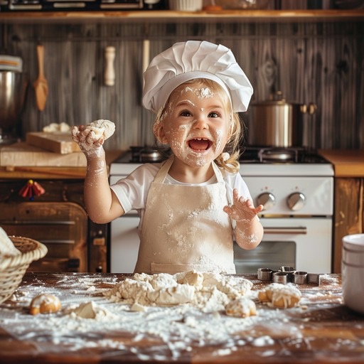
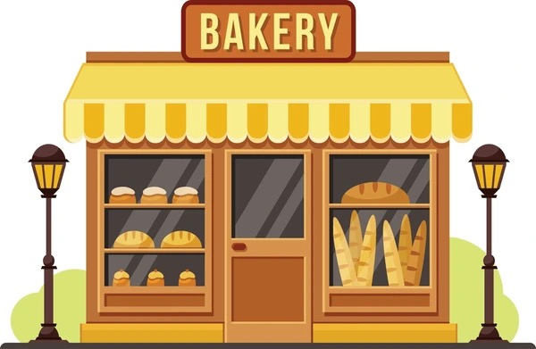
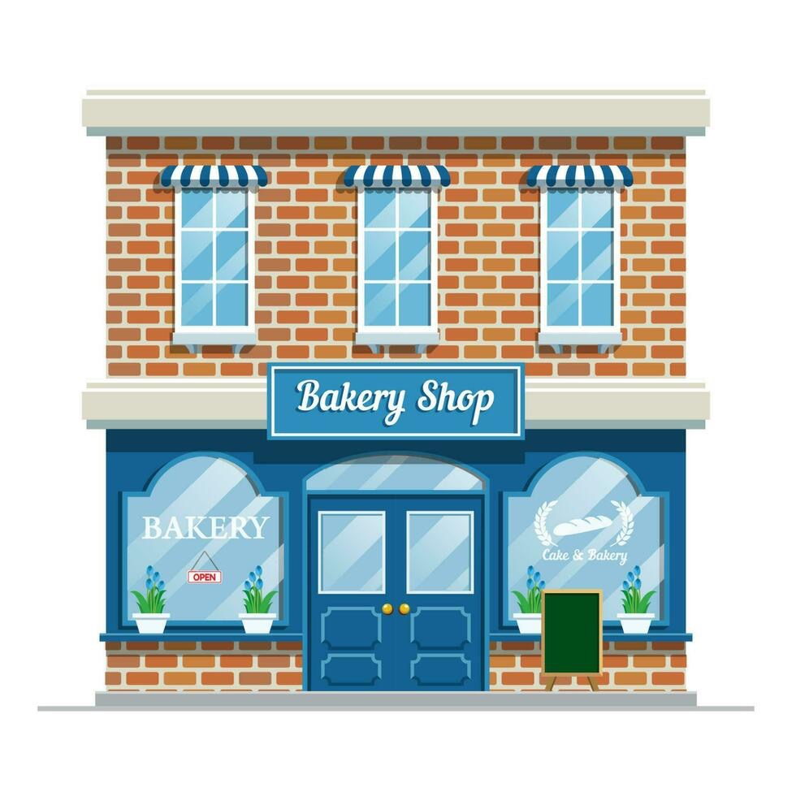
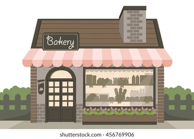
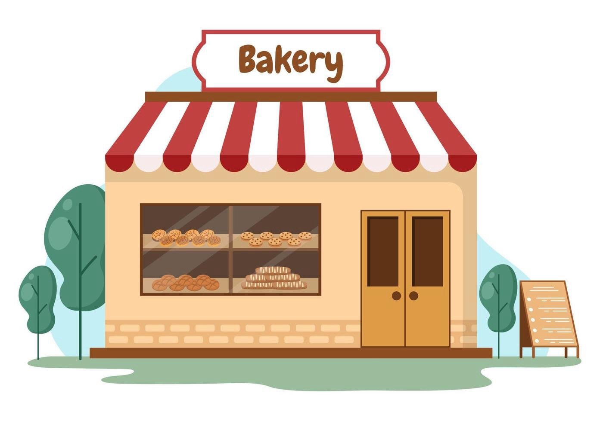
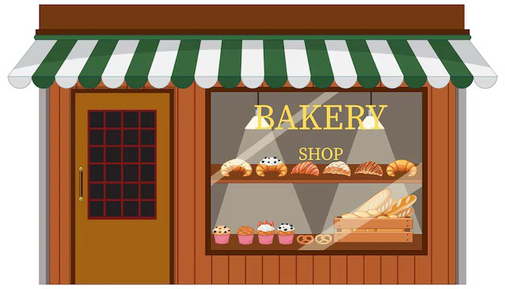
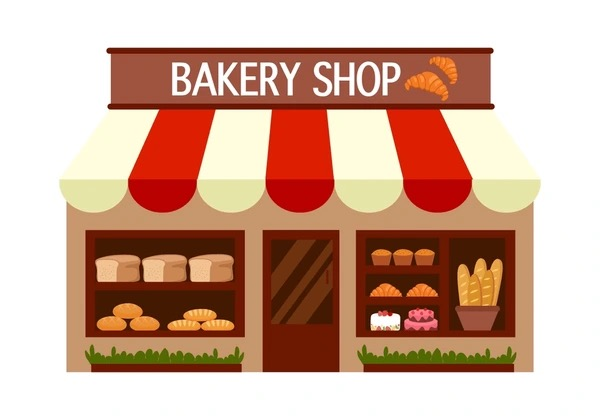
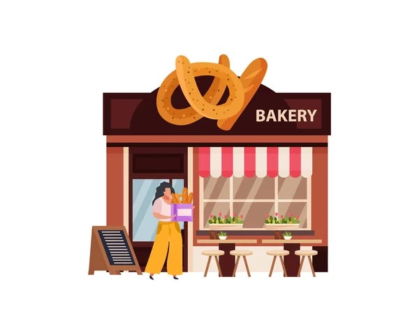

Sweet Crumbs er en familieeid bakebedrift med lidenskap for ekte bakverk og gode smaksopplevelser. Vi driver flere bakerier og deler samtidig våre beste oppskrifter med bakeglade mennesker på nett. Hos oss står håndverk, tradisjon og gleden av å bake sammen i sentrum. Bla videre nedover for å lære mer om oss

Familie har alltid vært grunnlaget for Sweet Crumbs. Det som startet som en felles lidenskap for baking, har vokst til en bedrift bygget på samhold, tradisjoner og kjærligheten til godt håndverk. Gjennom generasjoner har vi delt oppskrifter, kunnskap og erfaringer med hverandre. Disse verdiene preger fortsatt alt vi gjør – fra bakeriene våre til oppskriftene vi deler på nett. Som familiebedrift tror vi på kvalitet, omtanke og det å skape noe som bringer mennesker sammen. Familien har vært vår største inspirasjon og styrke gjennom hele reisen. Derfor er familie ikke bare en del av historien vår – det er selve hjertet i Sweet Crumbs
Sweet Crumbs er en familieeid bakebedrift som brenner for å skape gode smaksopplevelser gjennom kvalitetsbakverk og inspirerende oppskrifter. Med flere bakerier og en aktiv tilstedeværelse på nett ønsker vi å gjøre baking tilgjengelig og gøy for alle. Vi kombinerer tradisjonelle bakeverdier med nye ideer og legger stor vekt på kvalitet, håndverk og gode råvarer. Enten du besøker et av våre bakerier eller prøver en av oppskriftene våre hjemme, er målet vårt det samme – å spre bakeglede og bringe mennesker sammen gjennom noe godt.
Sweet Crumbs er tilgjengelig både fysisk og digitalt. Vi har bakerier flere steder i Norge, hvor vi hver dag tilbyr ferske bakverk laget med omtanke og kvalitetsråvarer. For deg som elsker å bake hjemme, deler vi også et bredt utvalg av oppskrifter på nett. Enten du besøker et av våre bakerier eller følger oppskriftene våre hjemme på kjøkkenet, er vi alltid bare noen få klikk eller et kort besøk unna.
Vi baker alt fra bursdagskaker og dåpskaker til smakfulle hverdagskaker og små søte fristelser som passer til enhver anledning. Utvalget vårt er variert, og vi legger stor vekt på å tilby noe for både store feiringer og de små øyeblikkene i hverdagen. Hos oss handler baking om mer enn bare smak – det handler om glede, tradisjon og å skape noe som kan deles med andre. Derfor lager vi kaker som både ser gode ut og smaker enda bedre, alltid med fokus på kvalitet og gode råvarer. Uansett anledning finner du noe hos oss som passer perfekt til bordet ditt.

Besøk oss i hjertet av hovedstaden – her finner du vårt største bakeri.

Midt i oljebyen finner du oss med nybakte varer hver morgen.

Mellom fjordene og Bryggen – kom innom for en kopp kaffe og noe søtt.

Studentbyen med smak – vi holder til nær Nidarosdomen.

Langt mot nord, men alltid varmt hos oss – friske kaker hver dag.

Sørlandets perle – nyt et stykke kake med utsikt mot sjøen.

Vår nyeste lokasjon – stikk innom og opplev Sweet Crumbs i Drammen.